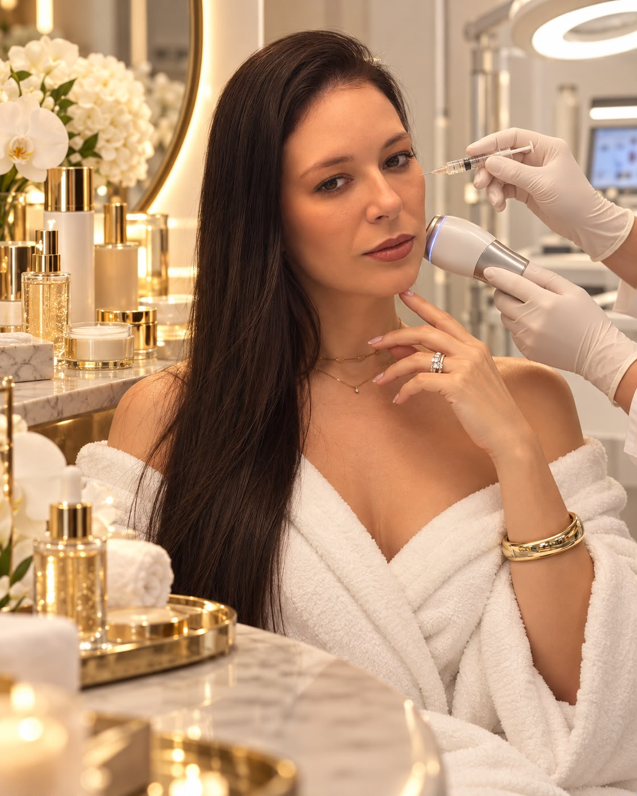

ESTÉTICA COM PROPÓSITO
Sua beleza.
Sua essência.
Seu momento.
Um olhar atento ao que torna você única.
Um cuidado pensado para valorizar sua beleza
com naturalidade e equilíbrio.

NOSSA ESSÊNCIA
Mais do que estética.
Um encontro com
a sua melhor versão.
Acreditamos em uma beleza que não precisa seguir padrões. Ela está nos seus traços, na sua história e na forma como você se sente.
Na Clínica Jéssica Arcanjo, o cuidado começa com uma conversa. Um espaço para entender seus desejos e pensar em possibilidades que façam sentido para você.
Conheça nossa forma de cuidarUM CUIDADO, MUITAS POSSIBILIDADES
O que faz você
se sentir bem?
Cada pessoa tem uma necessidade.
Explore as áreas de cuidado e converse
com a clínica sobre as opções disponíveis.
A indicação de cada procedimento depende de avaliação individual.
UM CUIDADO POR INTEIRO.
A SUA EXPERIÊNCIA
Do primeiro contato
ao cuidado com
cada detalhe.
Vamos conversar
Um primeiro encontro para ouvir seus desejos, dúvidas e expectativas.
Um olhar individual
A avaliação ajuda a entender suas necessidades e as possibilidades de cuidado.
Escolhas conscientes
Informação e orientação para decidir com tranquilidade sobre os próximos passos.
PODEMOS AJUDAR?
Seu cuidado começa
com clareza.
Algumas respostas para você
dar o primeiro passo com tranquilidade.
Como funciona a primeira avaliação?+
É o momento de conversar sobre seus objetivos e conhecer as possibilidades de cuidado. Entre em contato para confirmar a disponibilidade, os valores e como se preparar.
Como saber qual cuidado é ideal para mim?+
A indicação é individual. Na avaliação, suas necessidades e seu histórico são considerados para discutir as opções adequadas e esclarecer suas dúvidas.
Posso tirar dúvidas antes de agendar?+
Sim. Use o botão de contato para conversar com a clínica pelo WhatsApp e esclarecer suas dúvidas antes de escolher um horário.
Os resultados são iguais para todas as pessoas?+
Não. A resposta aos cuidados varia de pessoa para pessoa. Expectativas, limitações e orientações devem ser discutidas durante a avaliação.
SEU PRÓXIMO MOMENTO É SEU
Permita-se esse cuidado.
Comece por você.
Estamos aqui para ouvir você e planejar o próximo passo.
Agendar minha avaliaçãoFale com a clínica pelo WhatsApp